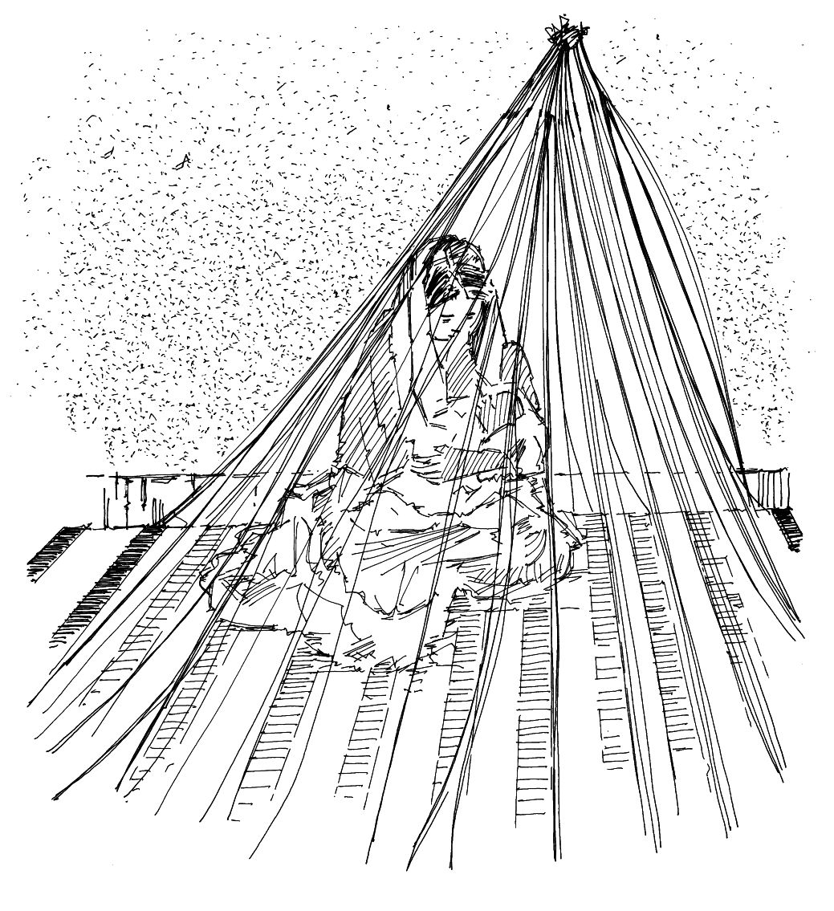
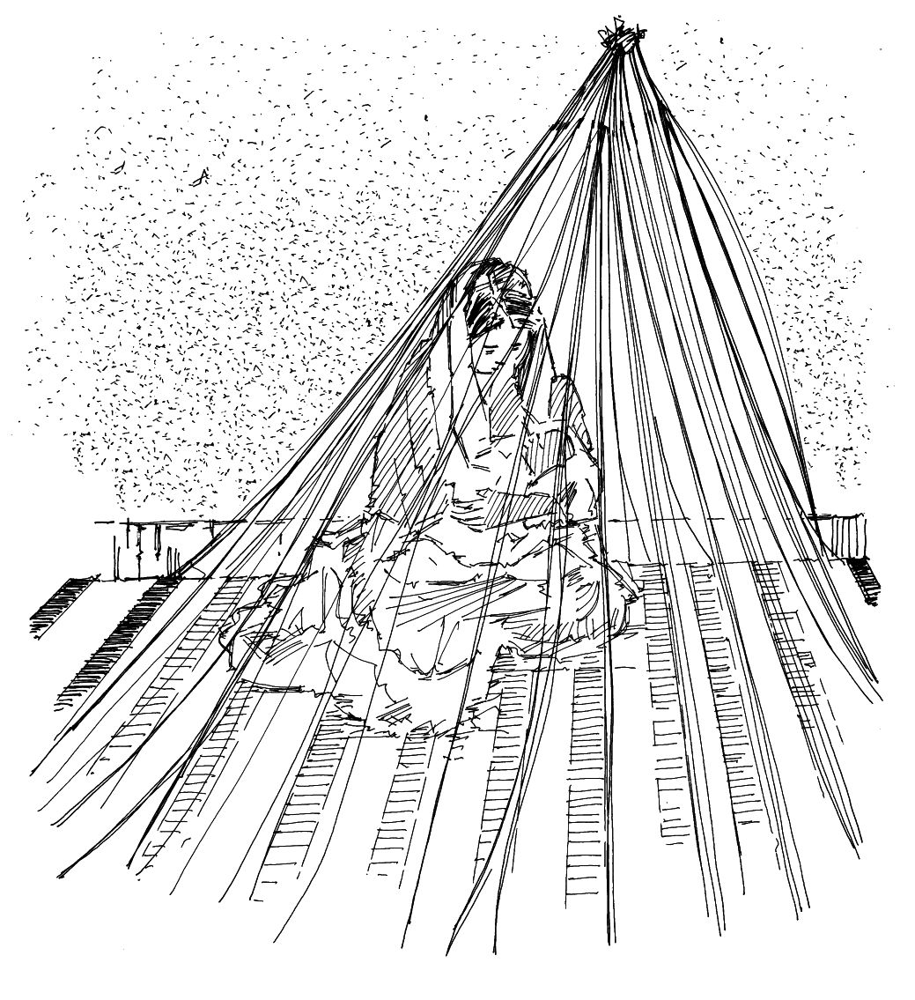

Transmission
- Piqûres de moustiques
- Les moustiques porteurs du paludisme piquent généralement la nuit, entre le crépuscule et l’aube
Symptômes
- Débute par plusieurs jours de fièvre, parfois accompagnée de nausées, de vomissements et de maux de tête, de douleurs dorsales, de frissons/tremblements et de douleurs musculaires.
- Dans les cas très graves, le malade est affaibli, perd connaissance et souffre d’une grave carence en fer dans le sang (anémie), ainsi que d’insuffisances pulmonaire et rénale.
Prévention
- Dormir sous une moustiquaire imprégnée d’insecticide la nuit
- Utiliser des rideaux imprégnés d’insecticide
- Réaliser des pulvérisations intradomiciliaires
- Donner un traitement préventif intermittent aux nourrissons et aux femmes enceintes
- Détruire les lieux de reproduction des moustiques en luttant contre les vecteurs (éliminer les broussailles autour de la communauté, pulvériser des insecticides, etc.)
- Favoriser la mobilisation sociale et la communication pour le changement de comportement
- Utiliser des médicaments antipaludiques (chimioprophylaxie)
 

Moustique. Mère et enfant dormant sous une moustiquaire.
Personnes vulnérables
- Les enfants de moins de cinq ans et les femmes enceintes sont plus exposés aux formes graves de la maladie
- Personnes vivant avec le VIH
- Populations déplacées, migrants et voyageurs qui n’ont jamais été exposés au paludisme auparavant
En cas d’épidémie
- Repérer rapidement les cas présumés et les aiguiller sans délai vers des établissements de santé pour traitement. Il est très important qu’ils soient soignés rapidement, surtout s’il s’agit d’enfants
- Renforcer la surveillance communautaire
- Favoriser l’utilisation des traitements antipaludiques
- Encourager les membres de la communauté à dormir sous une moustiquaire imprégnée d’insecticide la nuit
- Promouvoir les pulvérisations intradomiciliaires
- Promouvoir l’utilisation de rideaux imprégnés d’insecticide
- Détruire les lieux de reproduction des moustiques en luttant contre les vecteurs (éliminer les broussailles autour de la communauté, pulvériser des insecticides, etc.)
Évaluation au niveau local
Établissez une carte de la communauté et portez-y les informations que vous récoltez. Prenez note d’autres détails.
- Quand se sont déclarés les premiers cas de paludisme ?
- Combien de personnes sont atteintes de paludisme ? Où ?
- Combien de personnes en sont mortes ? Où ?
- Combien de personnes vivent dans la communauté ou la zone touchée ? Combien d’enfants de moins de cinq ans vivent dans la zone ? Combien de femmes enceintes vivent dans la zone ?
- Combien de personnes reçoivent un traitement antipaludique ?
- Qui sont les personnes vulnérables et où se trouvent-elles ? Lesquelles sont les plus touchées ?
- Combien d’enfants et de femmes enceintes dorment sous une moustiquaire la nuit ? Les moustiquaires sont-elles accrochées et entretenues de manière appropriée ? Si les personnes n’utilisent pas de moustiquaires, quelle en est la raison ?
- Quelles sont les habitudes, pratiques et croyances de la communauté en matière de pulvérisation d’antimoustiques dans les maisons ?
- Comment la communauté élimine-t-elle généralement l’eau stagnante ?
- Les autorités ont-elles mis en place un programme de lutte contre les vecteurs ?
- Où se situent les établissements et services de santé locaux (y compris les soignants traditionnels et communautaires) ?
- Quelles sont les habitudes, pratiques et croyances de la communauté en matière de soins et d’alimentation des malades ? Les femmes continuent-elles d’allaiter leurs enfants lorsque ceux-ci sont malades ?
- Un programme de mobilisation sociale ou de promotion de la santé est-il en place ?
- Quelles sources d’information sont les plus utilisées ?
- Des rumeurs ou fausses informations au sujet du paludisme circulent-elles dans la communauté ?